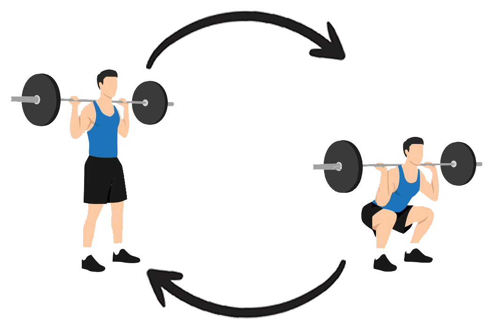
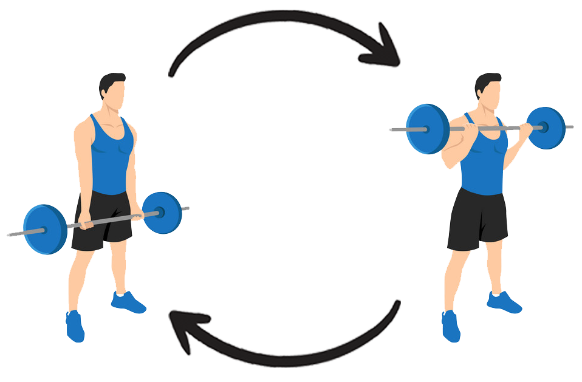
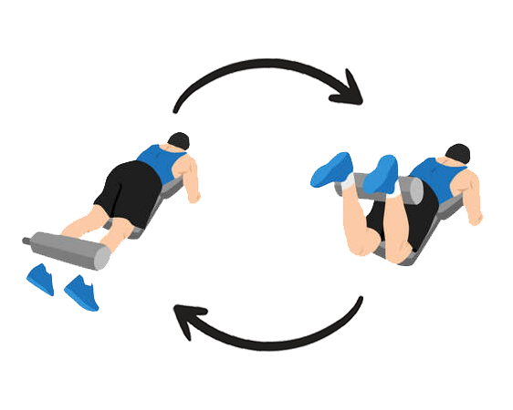
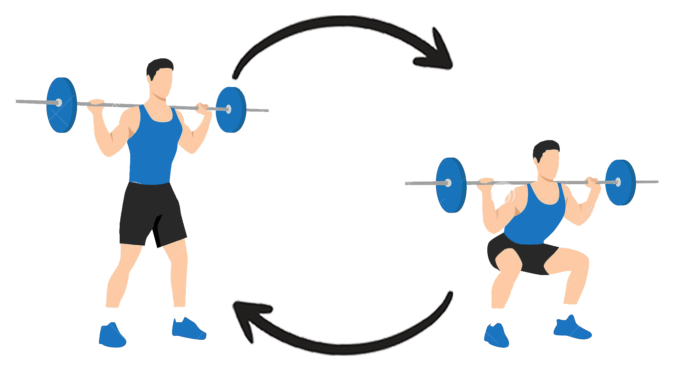
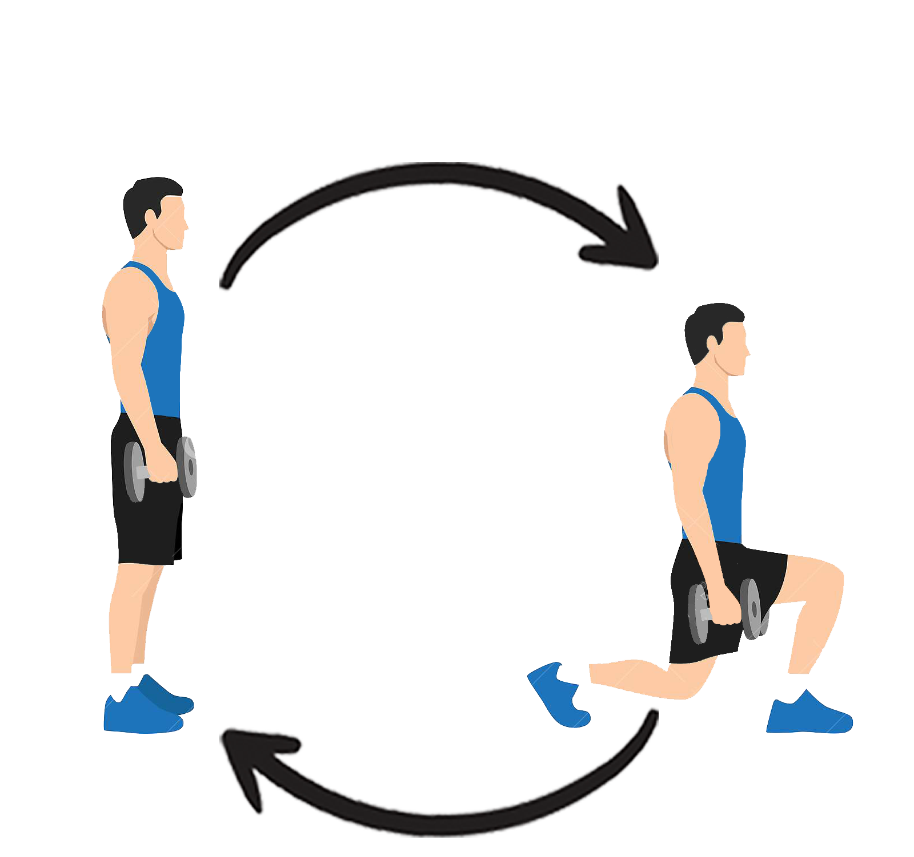

Back squat
Cum se efectuează:
- Încărcați o haltera pe spate și stați cu picioarele depărtate la lățimea umerilor. Privirea ta ar trebui să fie înainte, pieptul tău ar trebui să fie in față, iar picioarele să fie ușor îndreptate.
- Așezați-vă înapoi în șolduri, îndoiți genunchii și lăsați-vă în jos spre podea. Asigurați-vă că genunchii se mișcă ușor în afară și nu se prăbușesc înăuntru.
- Coborâți până când coapsele sunt paralele cu solul - sau cât de departe vă permite mobilitatea - apoi împingeți înapoi în poziția de pornire.

Deadlift
Cum se efectuează:
- Țineți o bară sau o ganteră în fiecare mână, sau o halteră. Ține-ți spatele drept și privirea dreaptă pe tot parcursul mișcării.
- Începeți să vă înclinați înainte la șolduri, coborând greutatea spre sol cu o ușoară îndoire a genunchilor. Lăsați greutățile să urmeze îndeaproape linia picioarelor și coborâți până când simțiți o întindere a ischiochimbilor.
- Faceți o pauză, apoi conduceți șoldurile înainte pentru a vă ridica, permițând fesierii să stimuleze mișcarea.

Leg curl
Cum se efectuează:
- Intră în aparatul de curl pentru picioare, întins pe burtă, cu ruloul chiar deasupra călcâielor. Prindeți barele de sprijin de pe ambele părți ale mașinii.
- Angajați-vă corpul și ridicați-vă picioarele, trăgând pad spre fund.
- Faceți o pauză în partea de sus, apoi reveniți la poziția inițială într-un mod controlat.

Front squat
Cum se efectuează:
- Încărcați o halteră pe partea din față a umerilor, prindeți-vă degetele într-o strângere sub mână de fiecare parte a umerilor pentru a o susține. Împingeți coatele în sus și țineți-vă privirea înainte.
- Așezați-vă pe spate în șolduri, îndoiți genunchii și coborâți-vă spre podea. Asigură-te că genunchii tăi se îndepărtează și pieptul tău rămâne drept, rezistând tragerii de a cădea înainte.
- Coborâți până când coapsele sunt paralele cu solul - sau cât de departe vă permite mobilitatea - apoi împingeți înapoi în poziția de pornire.

Walking lunges
Acest exercițiu se poate face, de asemenea, folosind doar un braț la un moment dat și apoi schimbând brațele după ce ați terminat un set cu primul braț.
Pentru a face un Walking lunge:
- Începeți cu picioarele împreună. Țineți o ganteră în fiecare mână dacă doriți să efectuați o plimbare ponderată.
- Ținându-vă pieptul mândru și priviți drept înainte, faceți un pas înainte, făcându-vă cu piciorul drept până când coapsa este paralelă cu solul.
- Împingeți în sus prin călcâiul drept, revenind la poziția inițială.
- Continuați înainte cu piciorul stâng.
